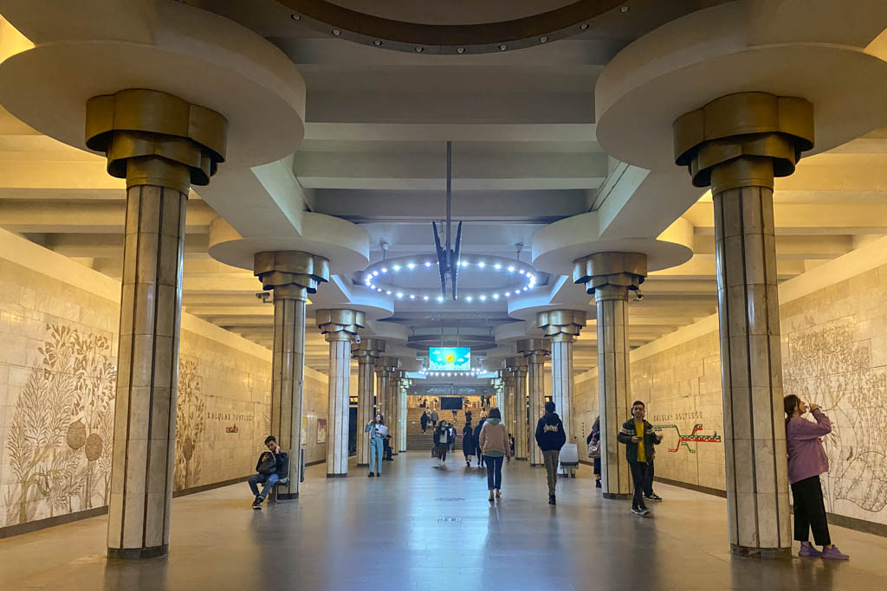
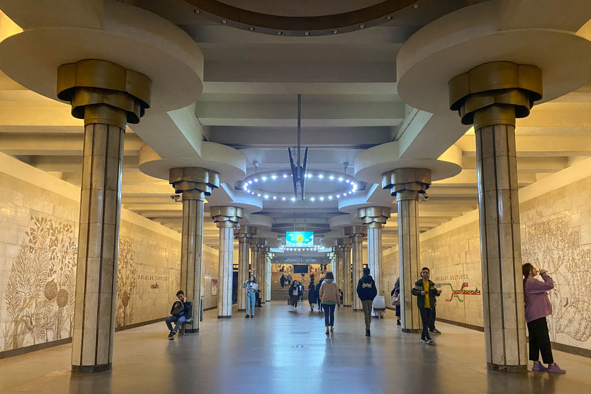

Ulduz Station opened on May 5, 1970, named after the Ulduz neighborhood in which it is located, whose name means ‘star’ in Azeri. Ulduz Station was one my favorites of the Baku Metro stations. The station’s ceiling lights somewhat reminded me of Kosmonavatlar Station of the Tashkent Metro.